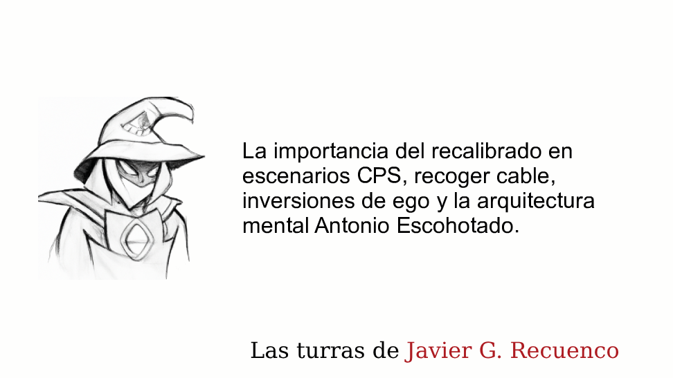
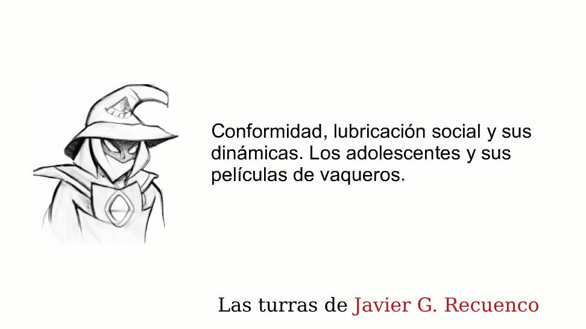
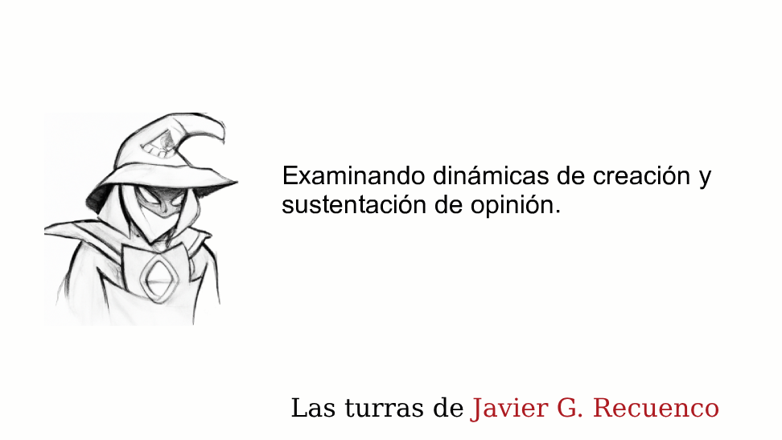
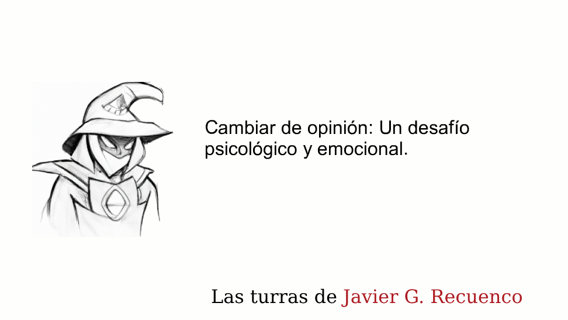
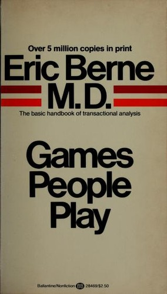
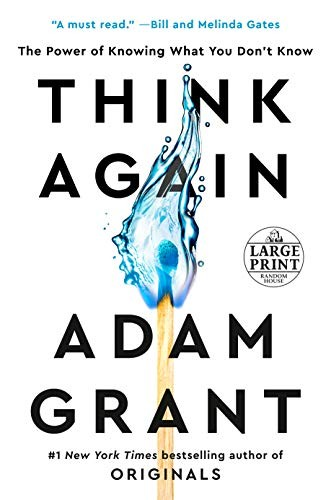
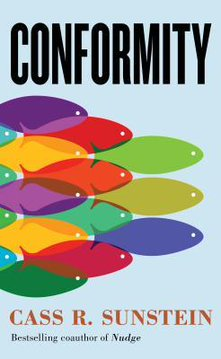
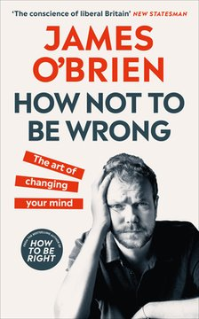

Módulo 03 / Apartado 5 de 5
Cambiar de opinión sin hundirse
El cierre del módulo: los tres modos en que nos atrincheramos, por qué los más listos rectifican peor, y por qué el consenso de una reunión no es información.
El problema, planteado bien
Todo lo anterior describe cómo se piensa mal. Este apartado va de la única salida que hay, que es rectificar. Y de por qué es tan difícil que hay gente que preferiría perder dinero antes que hacerlo.
Los tres modos en que nos atrincheramos
Esta clasificación es de Adam Grant, psicólogo organizacional, y aparece en la turra del recalibrado. Es lo más útil del apartado porque te permite pillarte a ti mismo en el acto.
- Modo predicador
- Estás convencido y lo que quieres es convertir al otro. No escuchas para entender, escuchas para encontrar el hueco donde meter tu argumento.
- Modo fiscal
- Lo que buscas es demostrar que el otro está equivocado. Cualquier fallo suyo te sirve, incluso los que no tienen que ver con el fondo.
- Modo político
- Lo que buscas es la aprobación de tu público. Dices lo que tu bando espera oír, y eso decide tu postura antes de que la pienses.
Los tres comparten el mismo supuesto oculto: que tus creencias son correctas y el trabajo consiste en defenderlas. Y lo que Grant propone en su lugar es un cuarto modo, el del científico: tratar tus creencias como hipótesis y buscar activamente lo que las tumbaría.
La pregunta que lo hace operativo, y que se puede soltar en una reunión sin que suene a filosofía: ¿qué dato me haría cambiar de opinión? Si nadie de la sala es capaz de contestarla, incluido tú, no estáis discutiendo. Estáis viendo quién manda.
El dato que fastidia: los listos rectifican peor
Es de las cosas más contraintuitivas del módulo y sale en la turra del recalibrado. Las personas de alto cociente intelectual son las que más dificultades tienen para actualizar sus creencias.
Y tiene todo el sentido si has leído el apartado 2. Si eres muy bueno construyendo argumentos, eres muy bueno construyendo argumentos para lo que ya piensas. La inteligencia no te da una brújula, te da un motor más potente, y el motor va donde apunta el volante.
Es también la respuesta a algo que Recuenco menciona citando a Kahneman: después de décadas estudiando sesgos, era perfectamente consciente de que eso no le había hecho inmune a ellos.
Cómo se hace: recoger cable
El modelo que usa es Antonio Escohotado, y no por sus ideas sino por su manera de rectificar en público sin desmontarse. Los pasos que identifica son cuatro, y el orden importa:
Aceptar el golpe. Aquí es donde la mayoría se para, porque duele y porque hay público.
Entender qué era lo que estaba mal, no solo que estaba mal. Sin esto, la rectificación es un gesto.
Que la corrección pase a formar parte de cómo miras, y no de una lista de excepciones.
Decirlo y cambiar lo que haces. Sin esta última, las tres anteriores no se distinguen de la rumiación.
Y un detalle que Recuenco subraya de Escohotado: nadie le obligó. No hubo un debate perdido ni una presión externa. Es la parte que no se puede copiar y la que hace que el ejemplo valga.
Por qué esto es carísimo si trabajas de esto
Aquí está la parte profesional del apartado, y la que no encontrarás en un libro de autoayuda.
El CPS no ofrece certezas, ofrece asunciones razonables que maximizan la probabilidad de acertar. Ese es su producto honesto. Y esa naturaleza exploratoria el cliente la lee como impericia, como falta de criterio y como inconsistencia, porque lo que quiere es alguien seguro que le diga que va a salir bien.
De ahí salen dos frases de la casa que resumen la postura: «todas las cagadas están bien mientras sean nuevas», y aquello de que a veces se gana y a veces se aprende.
Con un equilibrio que hay que cuidar, porque tiene dos maneras de romperse. Una es criminalizar el error, que produce gente que esconde los problemas hasta que explotan. La otra es pasarse al extremo contrario y elogiar el error, que aniquila el aprendizaje igual de bien: si todo vale, no hay nada que corregir.
Y la parte social: la espiral del silencio
Cierro con lo que impide rectificar cuando no depende de ti solo.
Es una teoría de la politóloga alemana Elisabeth Noelle-Neumann, de los años setenta. Dice que la gente calla su opinión cuando percibe que es minoritaria, por miedo al aislamiento social.
Y ahí está la espiral: como los que piensan eso callan, la opinión parece todavía más minoritaria, así que callan más. La percepción de mayoría se fabrica sola, y puede acabar muy lejos de lo que la gente piensa de verdad en privado.
Lo importante para un caso práctico: en una organización, el consenso aparente de una reunión no es información. Puede ser el resultado de que nadie quiso ser el primero.
Y de ahí el equilibrio que él llama metaestable, y que es un buen sitio donde terminar este módulo: ser lo bastante disidente para que la corriente no te lleve al barranco, y lo bastante hábil socialmente para no acabar de paria. Las dos cosas a la vez, todos los días.
Y la espiral que es suya: el «pa qué»
La espiral del silencio es de 1974 y es de otra persona. Recuenco tiene la suya, la contrapone a la de Noelle-Neumann expresamente, y en septiembre de 2026 le dedicó un hilo entero para desarrollarla. La diferencia entre las dos es de una línea:
Lo interesante es lo que pone debajo, y para eso trae tres libros que no había citado antes. Los tres explican por qué es tan atractivo montar un juego social en lugar de enfrentarse a la cosa.
- El marcador te secuestra los valores
- De C. Thi Nguyen: un juego es un arte de la agencia, porque su sistema de puntuación hace tus deseos legibles. Por un rato sabes exactamente qué importa. Eso es delicioso mientras juegas voluntariamente y se vuelve tóxico cuando el mecanismo sale del tablero y coloniza la vida: likes, rankings, citas, KPI, PIB, pasos del reloj. Lo llama value capture: dejas de preguntarte qué te importa y empiezas a optimizar el número que diseñó otro.
- El juego evita la conversación de adultos
- De Eric Berne: un «juego» es una serie de transacciones con un motivo oculto y un desenlace predecible. Lo que parece un intercambio adulto —«ayúdame a resolver esto»— esconde otra cosa: confirmar que nadie me entiende, ganar desde la victimización. El premio no es resolver el problema, es reforzar una posición. El «¿por qué no…? sí, pero…», el martirio moral, el «yo solo preguntaba». No son fallos de comunicación: son diseños, y permiten estar juntos sin encontrarse.
- Y el estatus no se sacia nunca
- De Will Storr: el estatus no es vanidad, es necesidad biológica, y se juega en tres familias de partidas — dominio (fuerza y miedo), virtud (pureza moral) y éxito (logro exhibible). Y aquí está el problema: reconocer ignorancia, cambiar de opinión, admitir un intercambio de males o decir «esto no tiene solución limpia» no puntúa en ninguna de las tres.
No es que la gente no quiera la verdad. Es que la verdad, sin juego, no paga en las monedas que el organismo y las instituciones saben contar: zascas, estatus, score.
Y de ahí sale la frase que más le duele a este oficio, y que explica media carrera profesional de mucha gente: en lo complejo, los incentivos suelen premiar la pantomima, no la resolución. Cuando además percibes que meterte en la cosa misma no mueve el sistema, la pregunta «¿para qué pelear esto de frente?» deja de ser pereza y pasa a ser racional.
Ninguno de ellos dice «deja de jugar», y él lo subraya. Nguyen apunta a que el juego voluntario —aquel del que puedes salirte y sobre el que puedes preguntarte «¿era este el juego que yo quería?»— es una forma alta de agencia. Berne apunta a lo otro: transacciones de adulto a adulto, decir lo que quieres y aguantar que no hay guion.
Aplicado a este módulo: el modo científico del apartado anterior no puntúa. Si lo practicas en una organización que reparte puntos por tener razón, vas a perder puntos. Saberlo de antemano es la diferencia entre elegirlo y sentirte estafado.
Fuentes de este apartado
Las turras de las que sale
El hilo con el que volvió de vacaciones, y la turra más reciente que se cita aquí. No está en el Turrero Post porque la colección se paró en febrero de 2026. Desarrolla su propia espiral contraponiéndola expresamente a la de Noelle-Neumann, y la apoya en tres libros que no aparecen en ningún otro sitio del corpus: Nguyen, Berne y Storr. Es también donde dice, en voz alta, que no sabe si el formato de los hilos se está agotando.

La importancia del recalibrado en escenarios CPSTurra · 52 tweetsLa turra central del apartado y una de las mejores del corpus. Escohotado como modelo de rectificación, Dunning-Kruger, los tres modos de Adam Grant, el sesgo binario, y el problema comercial de vender algo que no ofrece certezas.

Conformidad, lubricación social y sus dinámicasTurra · 45 tweetsSobre el precio de disentir y el de no hacerlo. Repasa a Sunstein, los experimentos de Asch y Milgram, las cascadas informativas y la polarización de grupo. Cierra con el equilibrio metaestable con el que termina este apartado.

Examinando dinámicas de creación y sustentación de opiniónTurra · 45 tweetsDe aquí sale la espiral del silencio. Va de cómo se forma y se sostiene una opinión mayoritaria percibida, que casi nunca coincide con la real.

Cambiar de opinión: un desafío psicológico y emocionalTurra · 44 tweetsEl mismo tema por la vía emocional: qué se pierde socialmente al rectificar, y por qué el coste no es intelectual sino de pertenencia.
Los libros

Games People PlayEric Berne · 1964El clásico del análisis transaccional, y el catálogo de los juegos psicológicos que la gente monta en lugar de hablar: el «¿por qué no…? sí, pero…», el martirio, el «yo solo preguntaba». Tiene sesenta años y se reconoce en cualquier reunión de mañana. Su utilidad aquí es que te enseña a ver el motivo oculto detrás de una petición que parece razonable.
sin portada The Status GameWill Storr · 2021El estatus como necesidad biológica y no como defecto de carácter, con las tres partidas —dominio, virtud y éxito— en las que se juega casi todo. Léelo justo después del apartado del autoengaño: explica por qué admitir un error cuesta tanto aunque nadie te vaya a castigar por hacerlo.
sin portada The ScoreC. Thi Nguyen · 2026El descubrimiento del verano para él, y el que aporta el concepto de value capture: cómo un sistema de puntuación sustituye tus valores por un número que diseñó otro. Es la versión filosófica de la ley de Goodhart del módulo 5 y de la falacia de McNamara del apartado 1 de este módulo.

Think AgainAdam Grant · 2021De aquí salen el predicador, el fiscal y el político, y el cuarto modo del científico. Es divulgación con investigación detrás y se lee rápido. El libro más directamente aplicable de este apartado.

ConformityCass Sunstein · 2019Por qué seguimos al grupo incluso contra lo que vemos. Repasa Asch, Milgram y las cascadas informativas, y defiende que la disidencia tiene un valor social que el disidente no cobra. Es el libro de la turra de la conformidad.
sin portada The Spiral of SilenceElisabeth Noelle-Neumann · 1980La fuente académica de la espiral. Es un libro de teoría de la comunicación, no divulgación, y se nota. Pero la idea central se entiende con el recuadro de arriba y explica media conversación de oficina.

How Not to Be WrongJames O'Brien · 2020Un periodista de radio contando en primera persona las veces que cambió de opinión sobre asuntos en los que había sido muy rotundo en público. Ojo con el título, que se confunde con el libro de matemáticas de Ellenberg; este es el de cambiar de opinión.